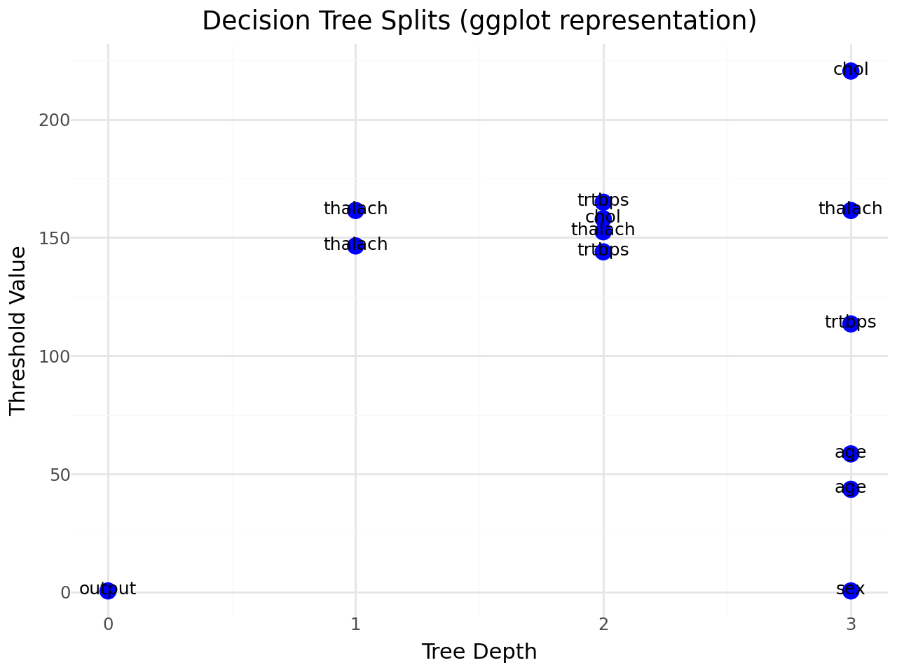

import pandas as pd
from sklearn.pipeline import *
from sklearn.neighbors import KNeighborsClassifier
from sklearn.tree import *
from sklearn.linear_model import LogisticRegressionOur dataset consists of clinical data from patients who entered the hospital complaining of chest pain (“angina”) during exercise. The information collected includes:
age: Age of the patientsex: Sex of the patientcp: Chest Pain type- Value 0: asymptomatic
- Value 1: typical angina
- Value 2: atypical angina
- Value 3: non-anginal pain
trtbps: resting blood pressure (in mm Hg)chol: cholesterol in mg/dl fetched via BMI sensorrestecg: resting electrocardiographic results- Value 0: normal
- Value 1: having ST-T wave abnormality (T wave inversions and/or ST elevation or depression of > 0.05 mV)
- Value 2: showing probable or definite left ventricular hypertrophy by Estes’ criteria
thalach: maximum heart rate achieved during exerciseoutput: the doctor’s diagnosis of whether the patient is at risk for a heart attack- 0 = not at risk of heart attack
- 1 = at risk of heart attack
ha = pd.read_csv("https://www.dropbox.com/s/aohbr6yb9ifmc8w/heart_attack.csv?dl=1")ha.head()| age | sex | cp | trtbps | chol | restecg | thalach | output | |
|---|---|---|---|---|---|---|---|---|
| 0 | 63 | 1 | 3 | 145 | 233 | 0 | 150 | 1 |
| 1 | 37 | 1 | 2 | 130 | 250 | 1 | 187 | 1 |
| 2 | 56 | 1 | 1 | 120 | 236 | 1 | 178 | 1 |
| 3 | 57 | 0 | 0 | 120 | 354 | 1 | 163 | 1 |
| 4 | 57 | 1 | 0 | 140 | 192 | 1 | 148 | 1 |
Q1: Natural Multiclass Models
Fit a multiclass KNN, Decision Tree, and LDA for the heart disease data; this time predicting the type of chest pain (categories 0 - 3) that a patient experiences. For the decision tree, plot the fitted tree, and interpret the first couple splits.
X_cp = ha[["age", "sex", "trtbps", "chol", "restecg", "thalach", "output"]]
y_cp = ha["cp"]
from sklearn.model_selection import *
X_cp_train, X_cp_test, y_cp_train, y_cp_test = train_test_split(
X_cp, y_cp, test_size=0.3, random_state=1, stratify=y_cp
)from sklearn.preprocessing import *
from sklearn.metrics import *
knn_cp = make_pipeline(
StandardScaler(),
KNeighborsClassifier(n_neighbors=5)
)
knn_cp.fit(X_cp_train, y_cp_train)
y_cp_pred_knn = knn_cp.predict(X_cp_test)
print(confusion_matrix(y_cp_test, y_cp_pred_knn))
print(classification_report(y_cp_test, y_cp_pred_knn))[[29 2 8 0]
[ 2 1 10 0]
[12 4 8 0]
[ 1 2 3 0]]
precision recall f1-score support
0 0.66 0.74 0.70 39
1 0.11 0.08 0.09 13
2 0.28 0.33 0.30 24
3 0.00 0.00 0.00 6
accuracy 0.46 82
macro avg 0.26 0.29 0.27 82
weighted avg 0.41 0.46 0.44 82
/usr/local/lib/python3.12/dist-packages/sklearn/metrics/_classification.py:1565: UndefinedMetricWarning: Precision is ill-defined and being set to 0.0 in labels with no predicted samples. Use `zero_division` parameter to control this behavior.
_warn_prf(average, modifier, f"{metric.capitalize()} is", len(result))
/usr/local/lib/python3.12/dist-packages/sklearn/metrics/_classification.py:1565: UndefinedMetricWarning: Precision is ill-defined and being set to 0.0 in labels with no predicted samples. Use `zero_division` parameter to control this behavior.
_warn_prf(average, modifier, f"{metric.capitalize()} is", len(result))
/usr/local/lib/python3.12/dist-packages/sklearn/metrics/_classification.py:1565: UndefinedMetricWarning: Precision is ill-defined and being set to 0.0 in labels with no predicted samples. Use `zero_division` parameter to control this behavior.
_warn_prf(average, modifier, f"{metric.capitalize()} is", len(result))tree_cp = DecisionTreeClassifier(max_depth=4, random_state=42)
tree_cp.fit(X_cp_train, y_cp_train)
tree_pred = tree_cp.predict(X_cp_test)
print(confusion_matrix(y_cp_test, tree_pred))
print(classification_report(y_cp_test, tree_pred))
tree_cp.feature_importances_[[25 3 10 1]
[ 2 4 7 0]
[ 5 7 11 1]
[ 1 1 4 0]]
precision recall f1-score support
0 0.76 0.64 0.69 39
1 0.27 0.31 0.29 13
2 0.34 0.46 0.39 24
3 0.00 0.00 0.00 6
accuracy 0.49 82
macro avg 0.34 0.35 0.34 82
weighted avg 0.50 0.49 0.49 82
array([0.04238612, 0.04448688, 0.13966611, 0.09734249, 0. ,
0.23093443, 0.44518398])from plotnine import *
nodes = []
def extract(node, depth=0):
if tree_cp.tree_.feature[node] != -2:
feat = X_cp.columns[tree_cp.tree_.feature[node]]
thresh = tree_cp.tree_.threshold[node]
nodes.append([depth, feat, thresh])
extract(tree_cp.tree_.children_left[node], depth+1)
extract(tree_cp.tree_.children_right[node], depth+1)
extract(0)
tree_df = pd.DataFrame(nodes, columns=["depth","feature","threshold"])
(
ggplot(tree_df, aes(x="depth", y="threshold", label="feature")) +
geom_point(size=4, color="blue") +
geom_text(nudge_y=0.5, size=9) +
labs(
title="Decision Tree Splits (ggplot representation)",
x="Tree Depth",
y="Threshold Value"
) +
theme_minimal()
)
The decision tree initially divides individuals according to their overall heart-disease risk, followed by their exercise heart rate (thalach), and then factors like blood pressure and cholesterol. This pattern suggests that chest-pain category is highly associated with both disease severity and general cardiovascular health
from sklearn.discriminant_analysis import *
lda_cp = make_pipeline(
StandardScaler(),
LinearDiscriminantAnalysis()
)
lda_cp.fit(X_cp_train, y_cp_train)
lda_pred = lda_cp.predict(X_cp_test)
print(confusion_matrix(y_cp_test, lda_pred))
print(classification_report(y_cp_test, lda_pred))
lda_cp.named_steps["lineardiscriminantanalysis"].coef_
lda_cp.named_steps["lineardiscriminantanalysis"].intercept_[[25 1 13 0]
[ 1 0 12 0]
[ 5 1 18 0]
[ 1 0 5 0]]
precision recall f1-score support
0 0.78 0.64 0.70 39
1 0.00 0.00 0.00 13
2 0.38 0.75 0.50 24
3 0.00 0.00 0.00 6
accuracy 0.52 82
macro avg 0.29 0.35 0.30 82
weighted avg 0.48 0.52 0.48 82
/usr/local/lib/python3.12/dist-packages/sklearn/metrics/_classification.py:1565: UndefinedMetricWarning: Precision is ill-defined and being set to 0.0 in labels with no predicted samples. Use `zero_division` parameter to control this behavior.
/usr/local/lib/python3.12/dist-packages/sklearn/metrics/_classification.py:1565: UndefinedMetricWarning: Precision is ill-defined and being set to 0.0 in labels with no predicted samples. Use `zero_division` parameter to control this behavior.
/usr/local/lib/python3.12/dist-packages/sklearn/metrics/_classification.py:1565: UndefinedMetricWarning: Precision is ill-defined and being set to 0.0 in labels with no predicted samples. Use `zero_division` parameter to control this behavior.array([-1.07111631, -2.28144393, -1.4315481 , -2.9495684 ])Q2: OvR
Create a new column in the ha dataset called cp_is_3, which is equal to 1 if the cp variable is equal to 3 and 0 otherwise.
Then, fit a Logistic Regression to predict this new target, and report the F1 Score.
Repeat for the other three cp categories. Which category was the OvR approach best at distinguishing?
ha["cp_is_3"] = (ha["cp"] == 3).astype(int)
X = ha[["age", "sex", "trtbps", "chol", "restecg", "thalach", "output"]]
from sklearn.metrics import *
def cp_f1(cp_value):
y = (ha["cp"] == cp_value).astype(int)
X_train, X_test, y_train, y_test = train_test_split(
X, y, test_size=0.3, random_state=42, stratify=y
)
model = LogisticRegression(max_iter=5000)
model.fit(X_train, y_train)
y_pred = model.predict(X_test)
return f1_score(y_test, y_pred)f1_0 = cp_f1(0)
f1_1 = cp_f1(1)
f1_2 = cp_f1(2)
f1_3 = cp_f1(3)
f1_0, f1_1, f1_2, f1_3(0.75, 0.0, 0.13333333333333333, 0.0)The OvR logistic regression model performed strongest on classifying chest-pain type 0, achieving an F1 score of 0.75. In other words, the model is considerably more effective at detecting patients in category 0 than those in categories 1, 2, or 3.
Q3: OvO
Reduce your dataset to only the 0 and 1 types of chest pain.
Then, fit a Logistic Regression to predict between the two groups, and report the ROC-AUC.
Repeat comparing category 0 to 2 and 3. Which pair was the OvO approach best at distinguishing?
ha_01 = ha[ha["cp"].isin([0, 1])].copy()
ha_01["y"] = (ha_01["cp"] == 1).astype(int)
X_01 = ha_01[["age", "sex", "trtbps", "chol", "restecg", "thalach", "output"]]
y_01 = ha_01["y"]
X_train, X_test, y_train, y_test = train_test_split(
X_01, y_01, test_size=0.3, random_state=42, stratify=y_01
)
logreg_01 = LogisticRegression(max_iter=5000)
logreg_01.fit(X_train, y_train)
y_prob = logreg_01.predict_proba(X_test)[:, 1]
auc_01 = roc_auc_score(y_test, y_prob)
auc_01np.float64(0.7297830374753452)ha_02 = ha[ha["cp"].isin([0, 2])].copy()
ha_02["y"] = (ha_02["cp"] == 2).astype(int)
X_02 = ha_02[["age", "sex", "trtbps", "chol", "restecg", "thalach", "output"]]
y_02 = ha_02["y"]
X_train, X_test, y_train, y_test = train_test_split(
X_02, y_02, test_size=0.3, random_state=42, stratify=y_02
)
logreg_02 = LogisticRegression(max_iter=5000)
logreg_02.fit(X_train, y_train)
y_prob = logreg_02.predict_proba(X_test)[:, 1]
auc_02 = roc_auc_score(y_test, y_prob)
auc_02np.float64(0.8803418803418803)ha_03 = ha[ha["cp"].isin([0, 3])].copy()
ha_03["y"] = (ha_03["cp"] == 3).astype(int)
X_03 = ha_03[["age", "sex", "trtbps", "chol", "restecg", "thalach", "output"]]
y_03 = ha_03["y"]
X_train, X_test, y_train, y_test = train_test_split(
X_03, y_03, test_size=0.3, random_state=42, stratify=y_03
)
logreg_03 = LogisticRegression(max_iter=5000)
logreg_03.fit(X_train, y_train)
y_prob = logreg_03.predict_proba(X_test)[:, 1]
auc_03 = roc_auc_score(y_test, y_prob)
auc_03np.float64(0.7264957264957266)The OvO method was most effective when separating classes 0 and 2, reaching a ROC-AUC of 0.8803 for that pair.